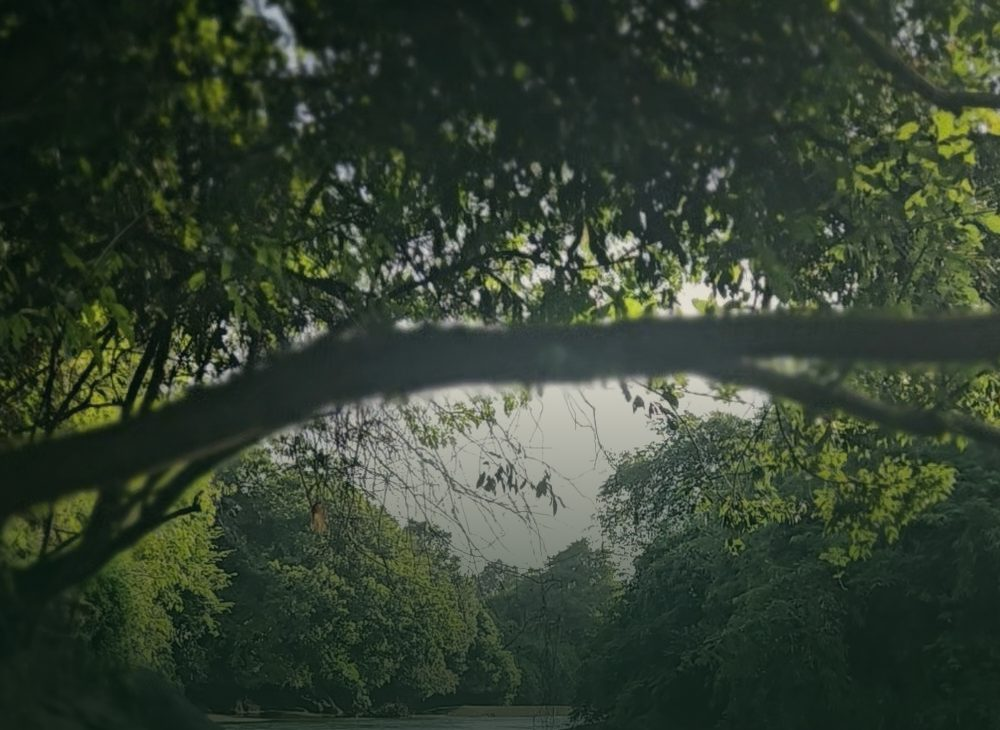
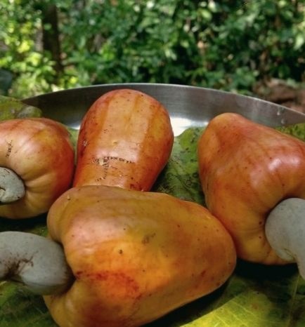
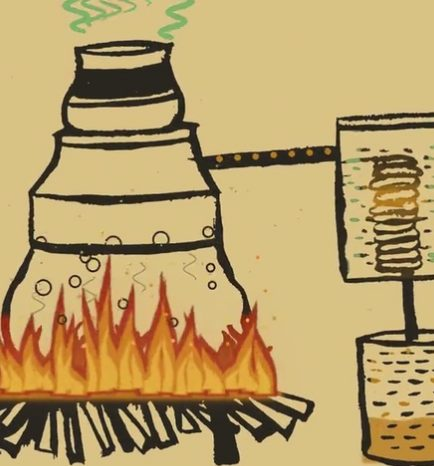
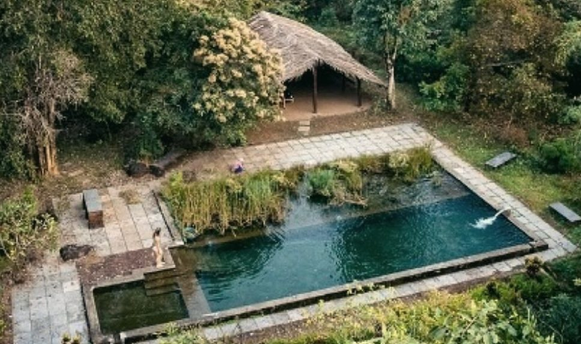
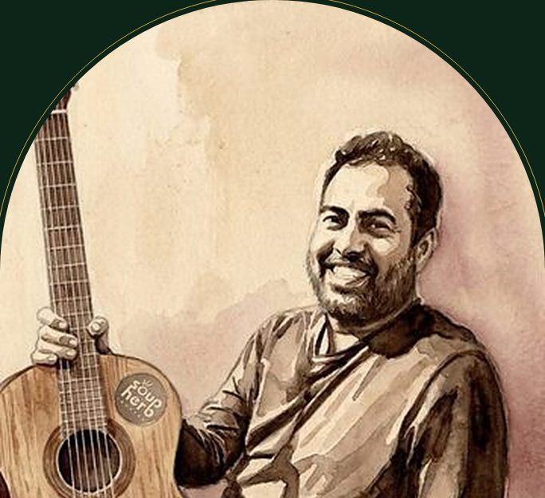
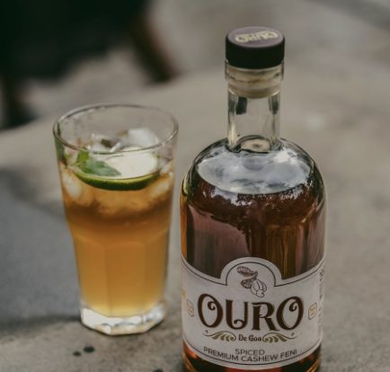
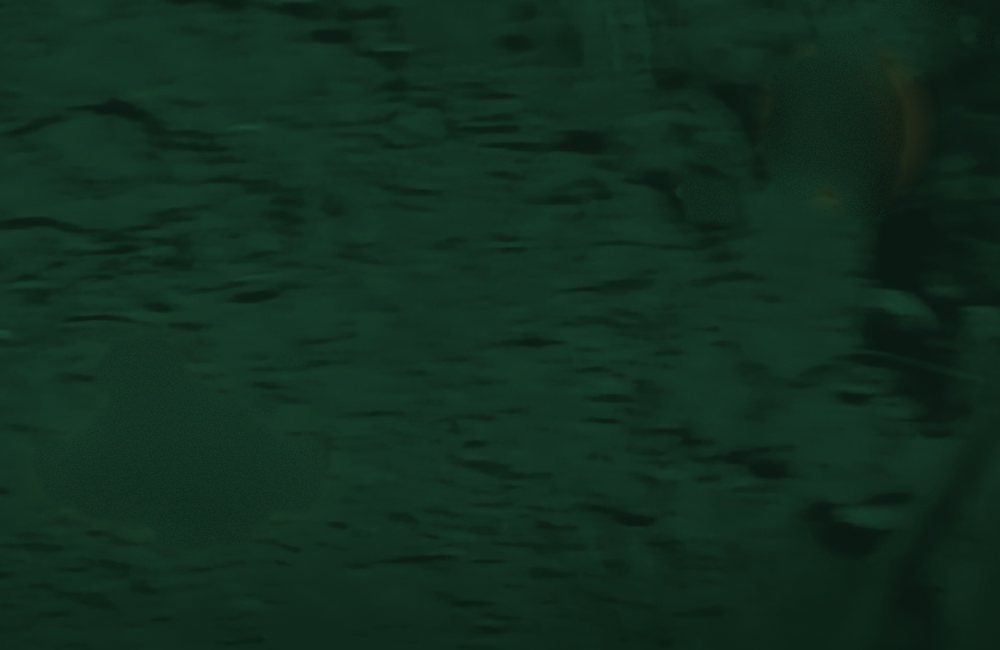
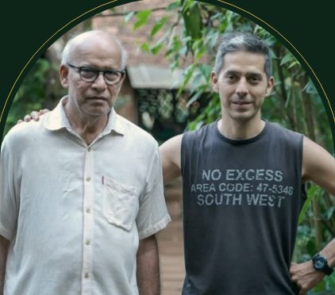
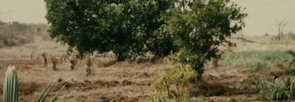

A Moving Arts Program original
The Feni Trail · an offbeat Goa farm experience, for a selected few
17 October
Sorry.
We're full.
A private weekend for a selected few, hosted by us, on one farm. This one is booked.
See you at the next one.
A Moving Arts Program original
17 October
Sorry.
We're full.
A private weekend for a selected few, hosted by us, on one farm. This one is booked.
See you at the next one.
02 / 10
Dudhsagar Plantation · One day, one night
A selected few, one farm, nothing to organise.
SATURDAY 17 OCTOBER
We start together.
Into the stream, down to the little river.
Crush a leaf. Watch Ouro being made.
Cool, clear, in the middle of the green.
Playing just for us.
Once Elvis puts the guitar down.
Then one look at a thin moon.
SUNDAY 18 OCTOBER
03 / 10
Saturday · The trail
Follow the trail and find the river.

04 / 10


Saturday · Afternoon
The spice trail
Black pepper vines, banana palms, cashew and coconut groves. Crush a leaf and smell the spice where it grows.
The copper still
Not cashew season, so the still runs on water this time. Same wood fire, same copper. A very pure rehearsal, if a mild one.
05 / 10

Saturday · After the trail
Cool, clear water on a working farm in South Goa. A long, lazy swim before anything else happens.
06 / 10

Elvis Lobo · Saturday night
Goa's guitar god is playing just for our selected few. Under the stars, next to the pool. No stage. Just Elvis and his acoustic guitar.
Meet The Boss →07 / 10

Saturday · After Elvis
Made with Ouro, the spiced cashew feni from this very farm.
Discover Ouro →
08 / 10
Saturday · Late night
With those who know where to look, we find real scorpions glowing in the dark. Then one last look at a thin sliver of moon before we turn in.
09 / 10


Dudhsagar Plantation · Our story
Ajit Malkarnekar and his wife Doris began with land that had no water, no electricity and no trees. Just a plan to restore the soil and grow food sustainably.
Their son Ashok studied environmental economics in Germany and came home, not to run a resort but to continue the philosophy.
Fruit, spices, medicinal plants and cashew, which becomes feni. Much of what you eat here grows here. You sleep on it, and Ouro is made on it.
10 / 10
The Feni Trail
This one is booked. Follow MAP for what comes next.
Yess, I am interested in the next one.
Leave us your number on WhatsApp and we'll tell you when the next Feni Trail is happening.
Yess, I'm interested →THE FENI TRAIL, IN SHORT
The Feni Trail is a Moving Arts Program original: a private, personalised Goa experience for a small group, hosted on one working farm in hidden South Goa. No crowds, no itinerary to plan, just the land, the drink it makes and music under the sky.
An offbeat, invite-only Goa farm experience: one day and one night at Dudhsagar Plantation with a river trail, the spice plantation, the copper still where Ouro cashew feni is made, a natural pool, Elvis Lobo live, barbecue with feni cocktails and a glowing-scorpion night walk.
At Dudhsagar Plantation in Karmane village, Cormonem, Sanguem: the hidden green interior of South Goa near Mollem National Park, far from the beach crowds.
Each edition is for a selected few and goes out by invitation. Tap Yess, I'm interested above, or message us on WhatsApp at +91 98496 90077, and we'll tell you when the next Feni Trail is happening.
Yes. Groups are small and everything is organised for you, from the meals and the trail to the live music, so it feels like being hosted on a friend's farm rather than a tour.